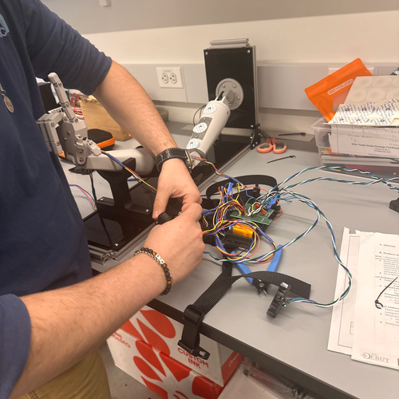

Sports Medicine · Diagnostic Device · Cornell DEBUT
A wearable sEMG and IMU platform that estimates elbow torque continuously during UCL rehabilitation, bringing motion-capture-lab accuracy onto the field.
UCL reconstruction surgeries in MLB pitchers rose 40% from 2010–2019; recovery takes ~20.5 months on average.
In New York State alone, UCL reconstruction procedures increased 343% between 2003 and 2014, with 88.5% occurring in athletes aged 15–24.
Lab-grade motion capture costs >$1M to install; consumer wearables like Driveline's Pulse carry 38.7% error.
KinaTrax's Hawkeye system is popular for pitching environments but requires an estimated ~$1,000,000 installation fee and intensive training data.
Our own surveys of 10+ clinical staff and D1 athletes confirmed an underdeveloped market for managing UCL-based physical therapy.
No device delivers accurate, non-invasive, low-cost UCL stress monitoring in the field.
Outcomes
Led an 8-person team through V1.0–V2.0 prototyping, hitting 2.58% torque error against OptiTrack ground truth.
Authored 100+ pages of FDA Design History File documentation and 200+ onboarding slides for the team.
Designed the 2-layer PCB, Fusion360 hardware, and the Python/GitLab processing pipeline.
Verified an 8-hour continuous wear trial with zero electrical dropouts, a sub-75g sensor band, and surface temperature under 40°C.
Built out the regulatory, reimbursement, and manufacturing case: 510(k) pathway, RTM billing codes, and a $549.99 retail / ~$353.73 COGS model.
Submitted the full project as a Phase 2B entry to VentureWell's DEBUT competition, including a recorded product demonstration.
Background
The elbow's ulnar collateral ligament (UCL) is the structure pitchers tear most often. The surgery that fixes it, Tommy John surgery, comes with a recovery clock measured in months, not weeks. Today the only way to actually measure how much torque an athlete's elbow is taking during that recovery is a motion capture lab. Infrared cameras, reflective markers, a six or seven figure installation. Outside that room, coaches and physical therapists are mostly guessing.
Axio Recovery is a wearable alternative built to close that gap. Following the end of SteadyStride, my previous Cornell DEBUT project, I took over as Project Manager for a new team of eight. The goal was a device that estimates valgus elbow torque continuously, non-invasively, and in the field, during real practices and rehab sessions, not just inside a lab.
Early customer discovery shaped the direction more than any internal brainstorm. One of our team members interviewed Cornell Baseball players directly, including one athlete recovering from a UCL procedure using a synthetic ligament graft instead of a traditional tendon harvest. The conversations surfaced a consistent preference. Players wanted something closer to a minimal sleeve or small strapped sensors, not a full rigid brace. Most were already comparing anything we proposed against Driveline's Pulse, the incumbent product they actually wear.
Hills-Musculoskeletal Model
Rather than relying on cameras, Axio Recovery estimates torque from two wearable sensor types. Surface EMG (sEMG) sensors read muscle activation as a voltage, and IMUs track limb orientation. Those two signals feed a patient-specific Hill's Musculoskeletal Model, calibrated to each athlete with a one-time setup.
τ(θ, t) = Σ r(θ, t) · F(θ, t)
Here r is the distance from each muscle head to the elbow joint, taken from the IMUs. F is the contraction force of that muscle, taken from the sEMGs. We target the three muscle groups our team identified as the dominant contributors to UCL stress: the biceps brachii long head, the triceps brachii long head, and the pronator teres.
Production
The hardware went through three real checkpoints, not one clean build. V1.0 was the integration milestone. Getting sEMGs and IMUs talking to an MCU at all, with basic breakout boards soldered onto a protoboard and simple mechanical casings that just held the form factor. V1.1 is where I split the electronics into a proper two-board architecture. A "main" board carrying the ESP32-WROOM, battery charging (MCP73871), and a microSD reader, and a separate "peripheral" board consolidating the individual sEMG and IMU connections through a TCA9548 I2C multiplexer. V2.0 is the version that went through full verification and validation. Slimmer housings, a 3.7V LiPo battery, and the wired Molex/JST connector scheme that's now the target for a wireless redesign.
I designed the 2-layer PCB for both boards in KiCAD. It handles analog filtering, USB-C charging, and I2C multiplexing across 10+ chips and 8 Molex/JST connectors. I modeled the wearable housings in Fusion360, sized against a sleeve fitting chart we built from forearm and bicep circumference measurements, X-small through X-large. Early bill-of-materials testing priced a six-sensor set at six MyoWare sEMGs (about $43.50 each), six IMUs (about $2.68 each), and a compression brace, landing around $287 per test unit before we moved to the integrated PCB design.
On the firmware side, the ESP32 (written in C++) samples at ~10 kHz, runs bandpass filtering and signal smoothing, and writes to a microSD card. After a session, that .CSV gets uploaded to a Python pipeline I built and hosted in an ISO-compliant GitLab repo. It runs the Hill's Model calculation and surfaces the result on the physician-facing dashboard shown below.
Live product
I built and shipped the physician dashboard at axiorecoverytracker.com. A clinician uploads a session .CSV, the Hill's Model pipeline runs in the browser, and the dashboard returns elbow torque estimates alongside raw sEMG traces for each of the four targeted muscle channels. No local software install required on the clinic side.
Before any design work, we ran an athletic immersion program. We tested TRIZ design principles, things like estimated moving-object length, stationary-object weight, and applied force or pressure, against real baseball, tennis, and lacrosse throwing motions. That work defined 18 concrete design constraints before we wrote a single line of firmware.
Once we had a working V1.0, I co-authored a formal Statement of Intent for access to Cornell's motion capture studio. It specified the exact experimental protocol. One designated pitcher, one catcher, one data collector, five infrared trackers placed at the shoulder, upper arm, elbow, wrist, and hand, and pitches capped under 20 MPH for safety. That protocol is what eventually produced the OptiTrack validation data below.
Full V1.0 system: mock arm rig, datalogger, sensor band

Benchtop assembly for isolated sensor verification
Outcomes & Testing
Verification testing with six participants confirmed the V2.0 prototype met every user-defined design requirement. Full pitching regimens with no observable restriction in range of motion, zero electrical dropouts or sensor migration across an 8-hour continuous wear trial, and a sensor band under 75g staying below 40°C at the skin.
The real test was validation against the gold standard. We ran low-intensity overhand throws (~20 mph) simultaneously through Axio Recovery and Cornell's OptiTrack motion capture studio. OptiTrack's result was computed via the Upper Extremity Dynamic Model in OpenSim as ground truth.
55.6 N·m
Axio Recovery estimate
54.2 N·m
OptiTrack ground truth
2.58%
Error, vs. 38.7% for Pulse
Elbow torque during a single overhand throw. OptiTrack inverse kinematics on the left, Axio Recovery's Hill-Musculoskeletal Model on the right.
That result is the headline of our DEBUT VentureWell competition submission. The submission also lays out the full commercialization path. A 510(k) pathway under 21 CFR 890.1375 against the CMAP Pro™ predicate device, Remote Therapeutic Monitoring reimbursement codes, and a manufacturing cost model targeting $549.99 retail against ~$353.73 COGS.
DEBUT VentureWell Competition Submission
Next up is wireless data streaming, LoRa or BLE, to replace the current wired Molex connectors, and a digitized, touchscreen-guided calibration workflow for physicians. A Comparative Effectiveness Research study comparing Axio Recovery directly against motion capture is currently in process for Cornell IRB approval.